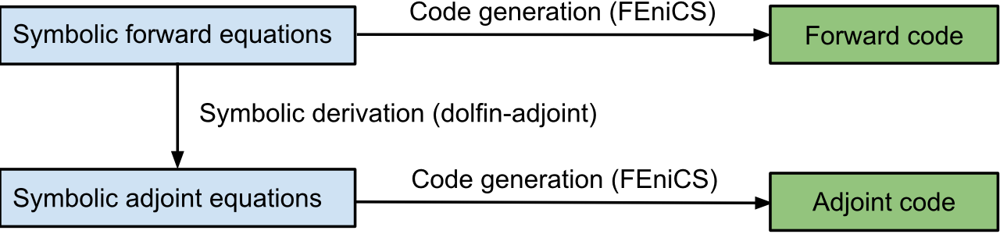
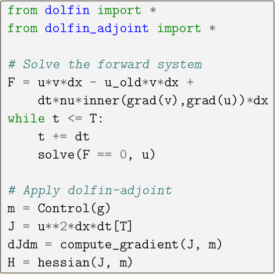
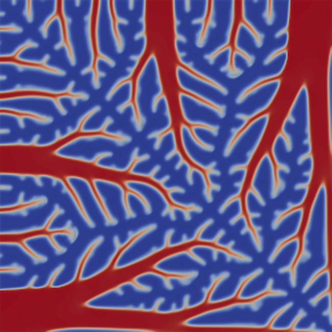
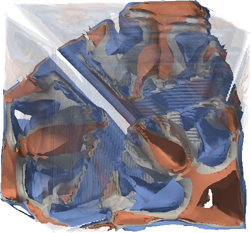

Every four years the Numerical Algorithms Group (NAG), the National Physical Laboratory (NPL) and Argonne National Laboratory (ANL) award the Wilkinson Prize for Numerical Software in honour of the outstanding contributions of Dr James Hardy Wilkinson to the field of numerical software. The 2015 Wilkinson Prize for Numerical Software will be awarded to the Patrick E. Farrell (University of Oxford), Simon W. Funke (Simula Research Laboratory), David A. Ham (Imperial College London) and Marie E. Rognes (Simula Research Laboratory) for dolfin-adjoint[1]. The presentation of the award will take place at the International Congress on Industrial and Applied Mathematics (ICIAM 2015) in Beijing, August 10-14, 2015.
Speaking of the 2015 winning software, Mike Dewar, Chair of the Wilkinson Prize Board of Trustees and Chief Technical Officer at NAG, said [2]: “dolfin-adjoint is an excellent piece of software that can solve problems in a range of application areas. Through its elegant use of high-level abstractions it makes performing what is usually a very challenging piece of computation seem extremely natural.”
Figure 1: Dolfin-adjoint derives the adjoint and tangent linear models from the high-level problem specification in FEniCS
The dolfin-adjoint project (www.dolfin-adjoint.org) is a FEniCS Application that automatically derives and solves adjoint and tangent linear equations from the high-level problem specification. By adding a few lines of code to an existing FEniCS model, dolfin-adjoint computes tangent linear and adjoint solutions, gradients and Hessian actions of arbitrary user-specified functionals, and uses these derivatives in combination with sophisticated optimization algorithms or to conduct stability analyses. The derived models use an advanced checkpointing scheme, run natively in parallel and achieve theoretically optimal performance, all of which are key properties that are difficult to achieve with traditional algorithmic differentiation techniques.
  Figure 2: Example of a topology optimisation for the design of a heat sink with dolfin-adjoint. The left image shows an implementation excerpt (the full code has 56 lines). The middle and the right images show the optimal sink material distribution in 2D and 3D, respectively.
The Wilkinson Prize was established to honour the outstanding contributions of Dr James Hardy Wilkinson to the field of numerical software. Speaking of the Wilkinson Prize in 2014, Dewar said [3]: “High quality numerical algorithms underpin much of the software that we all use on a daily basis, yet the skills needed to implement them are rarely given the recognition that they deserve. With the Wilkinson Prize we seek to redress this balance and celebrate the achievements of talented younger individuals in this area. We believe that the Wilkinson Prize is unique in that all the software entered is examined and tested by the reviewers, and the award is made primarily on the basis of the quality of the software, its documentation, and its testing regime.”
[1] http://www.nag.com/other/WilkinsonPrize.html
[3] http://www.nag.com/awarding-outstanding-achievements-in-numerical-software-wilkinson-prize
{kind=link}
{kind=link}
{kind=link}
{kind=link}